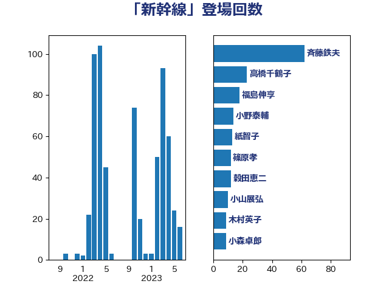

単語「新幹線」

| 斉藤鉄夫 | 公明党 | 62 回 |
| 高橋千鶴子 | 日本共産党 | 23 回 |
| 福島伸享 | 無所属 | 18 回 |
| 小野泰輔 | 日本維新の会 | 14 回 |
| 紙智子 | 日本共産党 | 13 回 |
| 篠原孝 | 立憲民主党 | 12 回 |
| 穀田恵二 | 日本共産党 | 12 回 |
| 小山展弘 | 立憲民主党 | 10 回 |
| 木村英子 | れいわ新選組 | 9 回 |
| 小森卓郎 | 自由民主党 | 9 回 |
| 長浜博行 | 無所属 | 8 回 |
| 牧野たかお | 自由民主党 | 8 回 |
| 枝野幸男 | 立憲民主党 | 8 回 |
| 岸田文雄 | 自由民主党 | 8 回 |
| 伴野豊 | 立憲民主党 | 8 回 |
| 菅家一郎 | 自由民主党 | 7 回 |
| 末次精一 | 立憲民主党 | 7 回 |
| 吉井章 | 自由民主党 | 7 回 |
| 古川康 | 自由民主党 | 7 回 |
| 渡辺周 | 立憲民主党 | 6 回 |
| 岡田直樹 | 自由民主党 | 6 回 |
| 田村智子 | 日本共産党 | 5 回 |
| 滝波宏文 | 自由民主党 | 5 回 |
| 加藤鮎子 | 自由民主党 | 5 回 |
| 伊波洋一 | 無所属 | 5 回 |
| 鈴木敦 | 国民民主党 | 4 回 |
| 谷田川元 | 立憲民主党 | 4 回 |
| 美延映夫 | 日本維新の会 | 4 回 |
| 神津たけし | 立憲民主党 | 4 回 |
| 森屋隆 | 立憲民主党 | 4 回 |
| 川崎ひでと | 自由民主党 | 4 回 |
| 大西健介 | 立憲民主党 | 4 回 |
| 吉田豊史 | 無所属 | 4 回 |
| 三上えり | 立憲民主党 | 4 回 |
| 近藤昭一 | 立憲民主党 | 3 回 |
| 盛山正仁 | 自由民主党 | 3 回 |
| 山崎誠 | 立憲民主党 | 3 回 |
| 大島九州男 | れいわ新選組 | 3 回 |
| 城井崇 | 立憲民主党 | 3 回 |
| 吉田とも代 | 日本維新の会 | 3 回 |
| 務台俊介 | 自由民主党 | 3 回 |
| 中川康洋 | 公明党 | 3 回 |
| 下条みつ | 立憲民主党 | 3 回 |
| 青山繁晴 | 自由民主党 | 2 回 |
| 鈴木俊一 | 自由民主党 | 2 回 |
| 近藤和也 | 立憲民主党 | 2 回 |
| 西銘恒三郎 | 自由民主党 | 2 回 |
| 西田昌司 | 自由民主党 | 2 回 |
| 西岡秀子 | 国民民主党 | 2 回 |
| 若松謙維 | 公明党 | 2 回 |
| 芳賀道也 | 国民民主党 | 2 回 |
| 福田昭夫 | 立憲民主党 | 2 回 |
| 礒崎哲史 | 国民民主党 | 2 回 |
| 源馬謙太郎 | 立憲民主党 | 2 回 |
| 浜口誠 | 国民民主党 | 2 回 |
| 永井学 | 自由民主党 | 2 回 |
| 榛葉賀津也 | 国民民主党 | 2 回 |
| 森山浩行 | 立憲民主党 | 2 回 |
| 本村伸子 | 日本共産党 | 2 回 |
| 山本順三 | 自由民主党 | 2 回 |
| 山口壯 | 自由民主党 | 2 回 |
| 室井邦彦 | 日本維新の会 | 2 回 |
| 大岡敏孝 | 自由民主党 | 2 回 |
| 国定勇人 | 自由民主党 | 2 回 |
| 嘉田由紀子 | 無所属 | 2 回 |
| 古賀之士 | 立憲民主党 | 2 回 |
| 倉林明子 | 日本共産党 | 2 回 |
| 井上哲士 | 日本共産党 | 2 回 |
| 丹羽秀樹 | 自由民主党 | 2 回 |
| 青木愛 | 立憲民主党 | 1 回 |
| 阿部弘樹 | 日本維新の会 | 1 回 |
| 長坂康正 | 自由民主党 | 1 回 |
| 鈴木英敬 | 自由民主党 | 1 回 |
| 野田国義 | 立憲民主党 | 1 回 |
| 足立敏之 | 自由民主党 | 1 回 |
| 赤羽一嘉 | 公明党 | 1 回 |
| 赤澤亮正 | 自由民主党 | 1 回 |
| 豊田俊郎 | 自由民主党 | 1 回 |
| 荒井優 | 立憲民主党 | 1 回 |
| 船橋利実 | 自由民主党 | 1 回 |
| 舟山康江 | 国民民主党 | 1 回 |
| 羽田次郎 | 立憲民主党 | 1 回 |
| 細田健一 | 自由民主党 | 1 回 |
| 笠井亮 | 日本共産党 | 1 回 |
| 竹谷とし子 | 公明党 | 1 回 |
| 神谷宗幣 | 参政党 | 1 回 |
| 石井苗子 | 日本維新の会 | 1 回 |
| 田村貴昭 | 日本共産党 | 1 回 |
| 猪口邦子 | 自由民主党 | 1 回 |
| 渡辺猛之 | 自由民主党 | 1 回 |
| 清水貴之 | 日本維新の会 | 1 回 |
| 深澤陽一 | 自由民主党 | 1 回 |
| 浜野喜史 | 国民民主党 | 1 回 |
| 浜田聡 | NHK党 | 1 回 |
| 泉田裕彦 | 自由民主党 | 1 回 |
| 池下卓 | 日本維新の会 | 1 回 |
| 横沢高徳 | 立憲民主党 | 1 回 |
| 森田俊和 | 立憲民主党 | 1 回 |
| 梅村聡 | 日本維新の会 | 1 回 |
| 梅村みずほ | 日本維新の会 | 1 回 |
| 柿沢未途 | 無所属 | 1 回 |
| 松本剛明 | 自由民主党 | 1 回 |
| 杉本和巳 | 日本維新の会 | 1 回 |
| 本田顕子 | 自由民主党 | 1 回 |
| 末松義規 | 立憲民主党 | 1 回 |
| 末松信介 | 自由民主党 | 1 回 |
| 朝日健太郎 | 自由民主党 | 1 回 |
| 日下正喜 | 公明党 | 1 回 |
| 新妻秀規 | 公明党 | 1 回 |
| 斎藤アレックス | 国民民主党 | 1 回 |
| 工藤彰三 | 自由民主党 | 1 回 |
| 山田俊男 | 自由民主党 | 1 回 |
| 山添拓 | 日本共産党 | 1 回 |
| 小田原潔 | 自由民主党 | 1 回 |
| 小熊慎司 | 立憲民主党 | 1 回 |
| 小泉龍司 | 自由民主党 | 1 回 |
| 小宮山泰子 | 立憲民主党 | 1 回 |
| 宮本徹 | 日本共産党 | 1 回 |
| 奥下剛光 | 日本維新の会 | 1 回 |
| 塩田博昭 | 公明党 | 1 回 |
| 吉田はるみ | 立憲民主党 | 1 回 |
| 勝部賢志 | 立憲民主党 | 1 回 |
| 前原誠司 | 国民民主党 | 1 回 |
| 佐藤英道 | 公明党 | 1 回 |
| 住吉寛紀 | 日本維新の会 | 1 回 |
| 伊藤孝恵 | 国民民主党 | 1 回 |
| 中川郁子 | 自由民主党 | 1 回 |
| 上田英俊 | 自由民主党 | 1 回 |
| 上月良祐 | 自由民主党 | 1 回 |
| 三浦信祐 | 公明党 | 1 回 |
| おおつき紅葉 | 立憲民主党 | 1 回 |